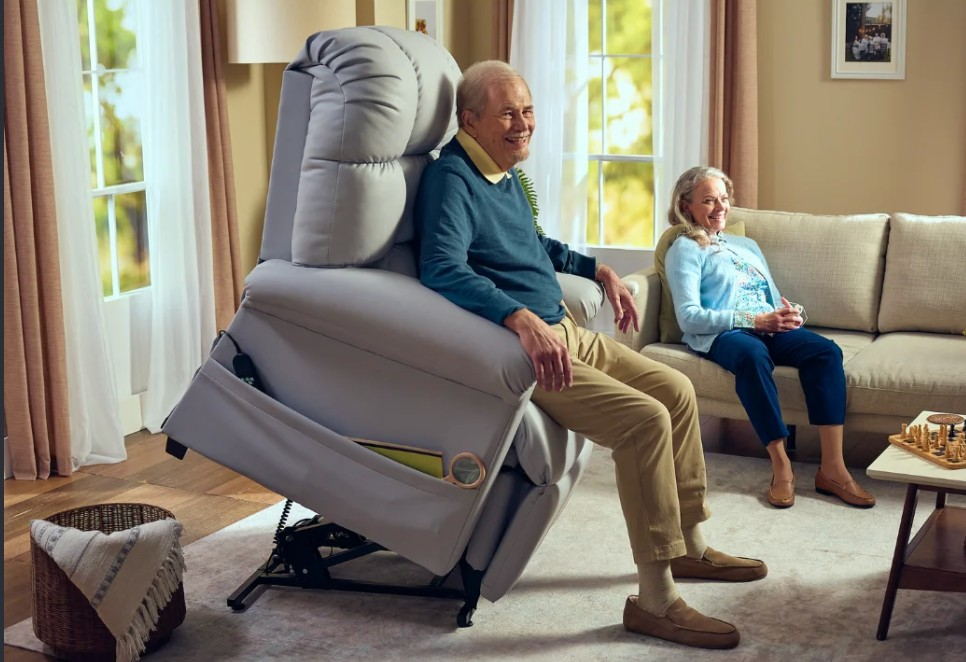
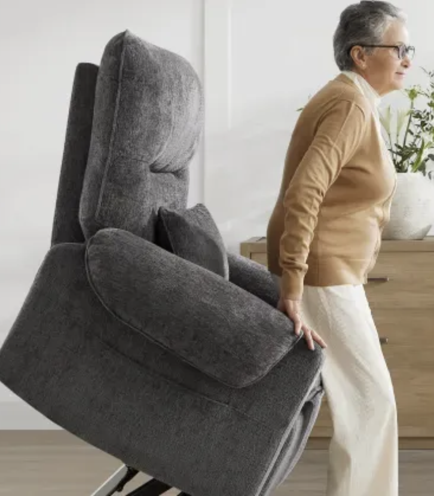
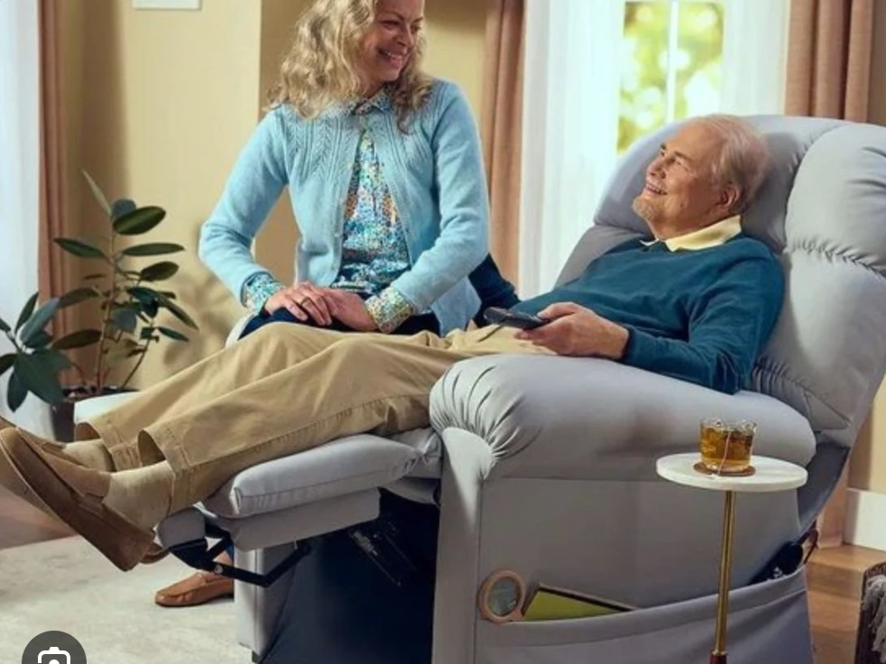
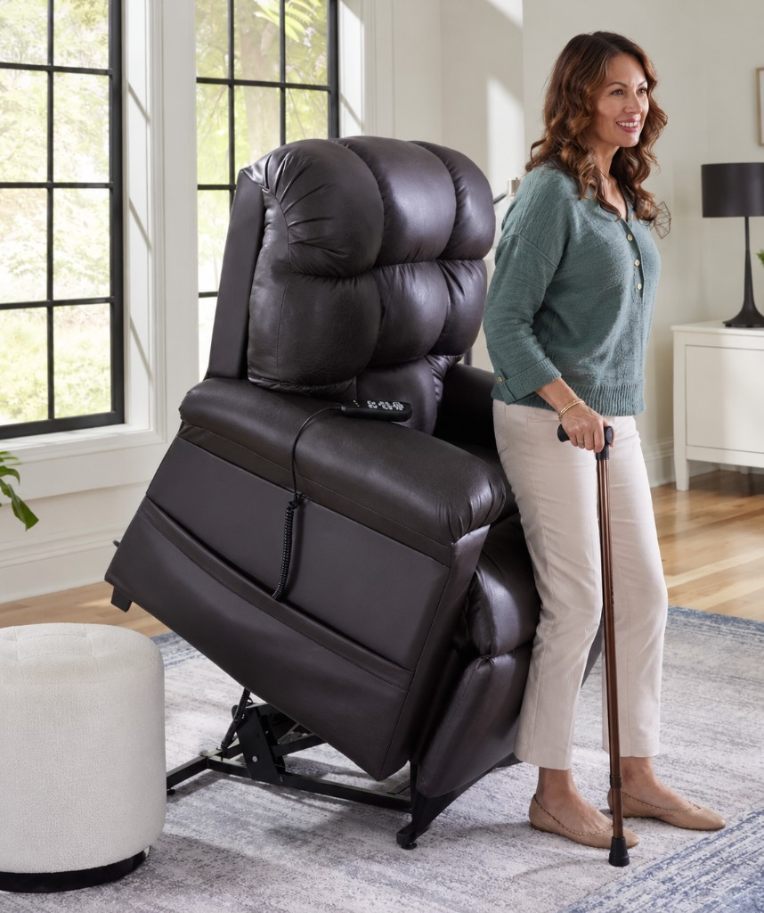
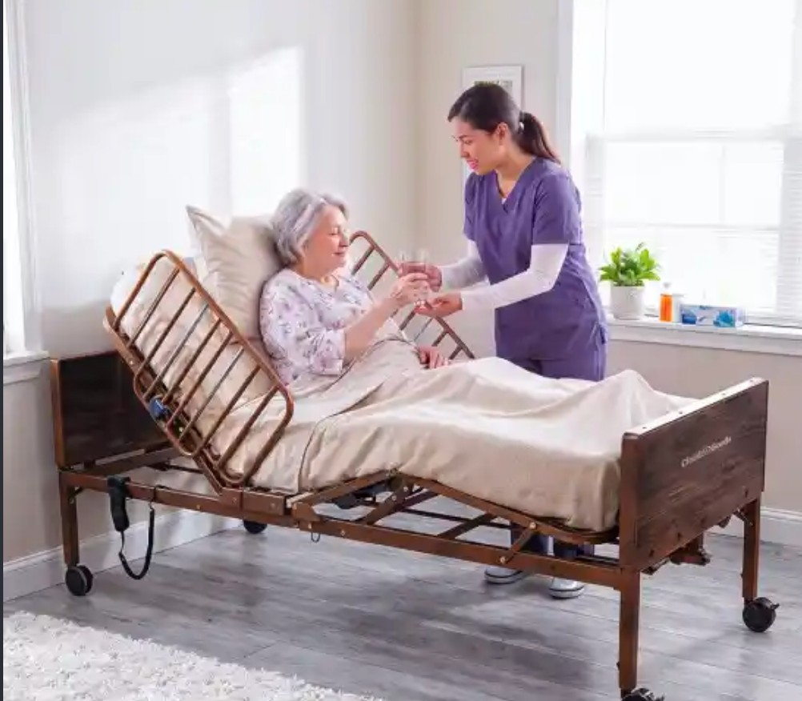
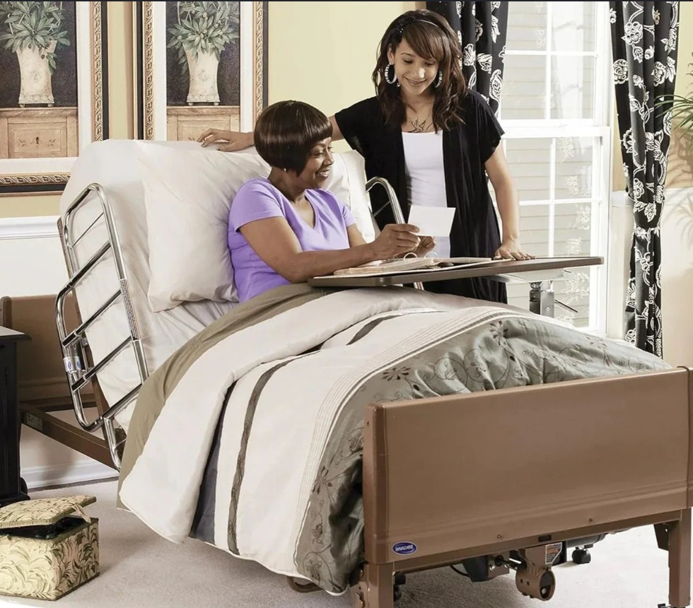

Medical-grade lift chairs
Power lift chairs that help you stand and sit safely—ideal after surgery or for limited mobility. Available for rental delivery in Washington County, VA.

Lift chair rental · Washington
Medical-grade lift chair and electronic bed rentals in Washington County, VA. Clean equipment for safer recovery at home.
Save on expensive medical equipment—borrow clean, medical-grade lift chairs with easy delivery in Washington County, VA.
We deliver medical-grade equipment across Virginia—including Washington County— so you can recover safely at home without buying.



Power lift chairs that help you stand and sit safely—ideal after surgery or for limited mobility. Available for rental delivery in Washington County, VA.


Adjustable beds that raise the head and feet for comfort and safer rest during recovery. Delivered to homes in Washington County, VA.
Serving Washington
District Medical Rentals helps families and individuals in Washington County, VA recover comfortably at home with reliable medical-grade lift chair and bed rentals.
Outside this area? Call us at 917-346-5309 — we may still be able to help.
Yes. We deliver medical-grade lift chairs and electronic medical beds to Washington County, VA. Call 917-346-5309 or book online.
Yes. Our medical-grade lift chairs gently help you stand up and sit down for safer recovery at home.
Get the support you need in Washington without buying an expensive chair. We deliver clean equipment and pick it up when you’re done.
Medical-grade lift chairs are $125 per week. Medical rental beds are $240 per week. See our rates page.
Call 917-346-5309 or use our contact form. We’ll confirm what you need and your drop-off details.